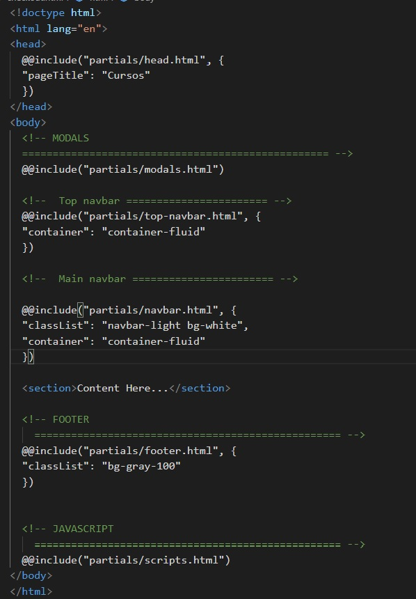

Introduction
How to get started with Amina!
Amina is clean, well-considered design, quickly design and customize responsive mobile-first sites with Bootstrap and organized, high-quality code.
Dev setup
To get started, you need to do the following:
1. Make sure you have Node installed since Amina uses npm to manage dependencies. If you don't, installing is quite easy, just visit the Node Downloads page and install it.

2. Unzip your theme and open your command line, making sure your command line prompt is at the root of the unzipped theme directory.
3. If you don't have the Gulp command line interface, you need to install it.
npm install gulp-cli -g
4. Open your command line to the root directory of your unzipped theme and run to install all of Amina theme's dependencies.
npm install
It's that simple! If you're not used to using terminal, don't worry, this is as advanced as it
gets. If you want to kill the server and stop Gulp, just hit Control
+ C.
Compiling
Gulp is used to manage Amina theme development. Open your command line to the root directory of the theme to use the following commands:
1. Compile and watch the SCSS/JS/HTML, use Live Reload to update browsers instantly, start a server, and pop a tab in your default browser. Any changes made to the source files will be compiled as soon as you save the file.
gulp
2. Generates a /dist directory with all the production files.
gulp build
File structure
- dist
- node_modules
-
src
-
assets
- css
- fonts
- img
- js
- scss
- docs
- partials
-
assets
- 📄 gulpfile.js
- 📄 package.json
- 📄 .gitignore
Gulp file includes
The gulp-file-include package is used to make partials easier to use for initial development. Amina, we only use it for a handful of components that are found on most pages. The following partials are available:

Easily create new .html partials inside the /partials folder and point
to them from any file by specifying the path to the partial file and using the
@@include keyword.
Customizing SCSS
There are 2 basic ways to customize your theme...
-
Customizing SCSS. This is more versatile and sustainable way to customize
Amina, but requires the
gulpcompilation steps outlined above. The 2 major benefits of this strategy are using variable overrides to easily customize theme styles, plus you never have to touch Bootstrap or Amina's source, meaning future updates will be much, much, simpler. There are 2 provided files that make this strategy simple to implement:-
custom-variables.scss: This file can be used to override Bootstrap core and Amina variables for customizing elements that have been tied to variables. -
custom.scss: This file can be used for writing custom SCSS that will be compiled alongside Bootstrap and Amina's core files.
-
-
Compiled CSS. If you plan on using Amina "as is", or only need limited
customization, feel free to simply attach the compiled
theme.cssortheme.min.cssfile in thedist/assets/cssdirectory.